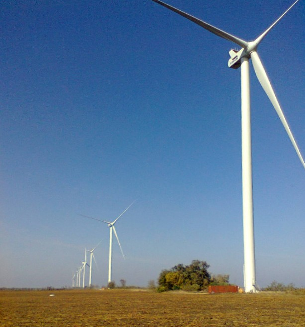
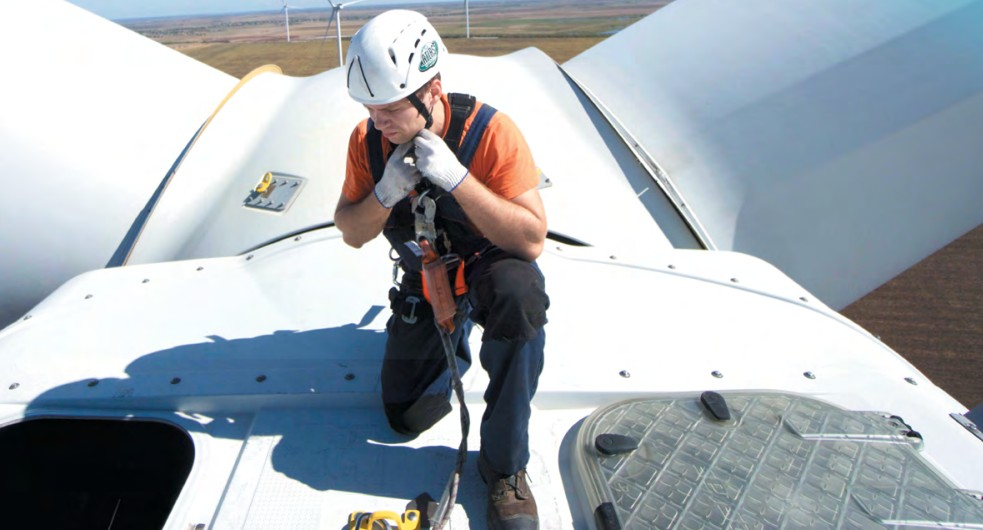
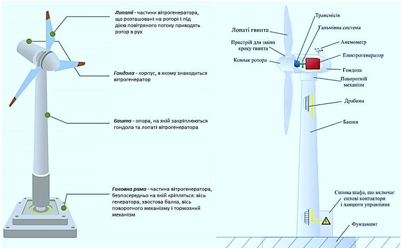

Вітрова електростанція потужністю 200 МВт у Запорізькій області
Вітропарк «Ботієве» — один із найбільших об’єктів відновлюваної енергетики України, розташований у прибережній степовій зоні Запорізької області, що характеризується стабільними та потужними вітровими потоками. Станція призначена для промислового виробництва електричної енергії з відновлюваного джерела — енергії вітру.
Комплекс складається з мережі вітрових турбін, розташованих на значній площі з оптимальними інтервалами для уникнення аеродинамічного затінення. Кожна турбіна оснащена генератором, системами керування та перетворення електроенергії. Вироблена електроенергія збирається внутрішньою кабельною мережею та передається на центральну підвищувальну підстанцію.

Проєктування вітропарку «Ботієве» розпочалося в рамках державної стратегії розвитку відновлюваної енергетики України. На підготовчому етапі були проведені багаторічні вітровимірювальні дослідження, геологічні вишукування та екологічна оцінка території. Це дозволило визначити оптимальні місця встановлення турбін та параметри їх розміщення.
Будівництво здійснювалося поетапно у 2011–2014 роках. У процесі реалізації було споруджено фундаменти турбін, змонтовано вежі, гондоли та ротори, прокладено десятки кілометрів кабельних ліній середньої напруги, а також збудовано підвищувальну підстанцію 35/110 кВ.

| Тип | Вітрова електростанція |
|---|---|
| Встановлена потужність | 200 МВт |
| Напруга генерації | 0,69 кВ |
| Напруга передачі | 110 кВ |
| Кількість турбін | 65 |
| Одинична потужність турбіни | 3 МВт |
| Висота башти | 100 м |
| Діаметр ротора | 112 м |
| Місцезнаходження | Запорізька обл., с. Ботієве |
Кожна вітрова турбіна генерує електроенергію напругою 0,69 кВ. Через індивідуальний трансформатор напруга підвищується до 35 кВ і передається кабельними лініями до центральної підстанції. На підстанції встановлено силові трансформатори 35/110 кВ, розподільчі пристрої та системи релейного захисту і автоматики.
Далі електроенергія передається повітряною лінією 110 кВ до вузлової підстанції енергосистеми.

Адреса: Запорізька обл., Приморський р-н, с. Ботієве
Телефон: +38 (061) 000-00-00
Email: info@botievo-wind.ua